| Name | Lv | HP | Kind | Zone | Drops |
|---|
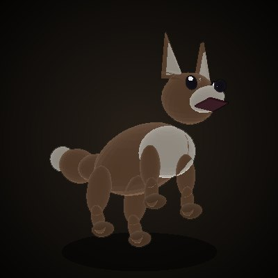 | Brown Field Fox | 2 | 19 | normal | Violet Swamp | 6 |
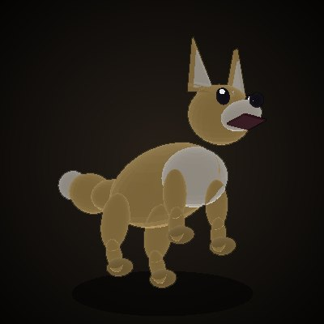 | Grassland Fox | 2 | 19 | normal | Sandwind Fields | 6 |
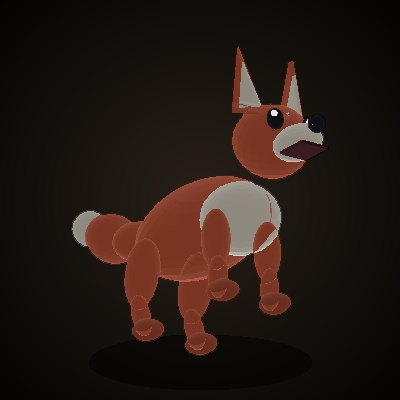 | Red Field Fox | 3 | 60 | normal | Whispering Woods | 5 |
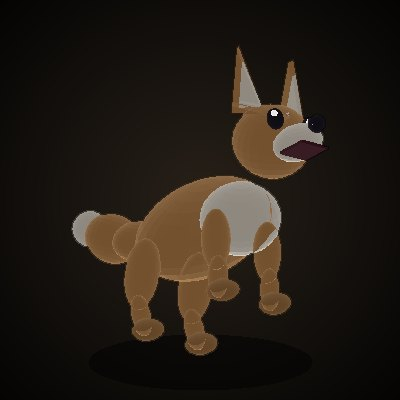 | Old Field Fox | 3 | 60 | normal | Wildflower Plains | 7 |
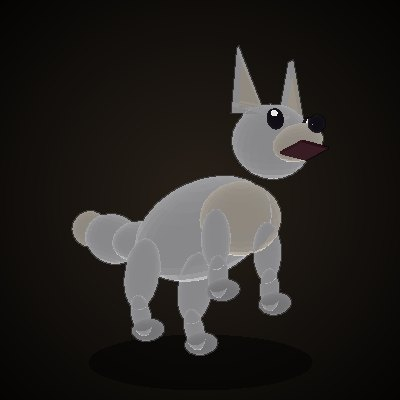 | Longtail Fox | 3 | 60 | normal | Snowflake Hill | 6 |
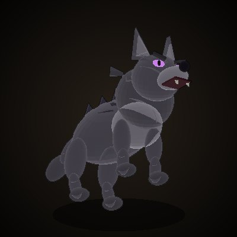 | Grey Wolf | 4 | 71 | normal | Violet Swamp | 6 |
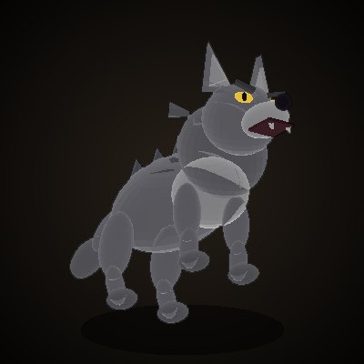 | Ashen Wolf | 4 | 71 | normal | Whispering Woods | 6 |
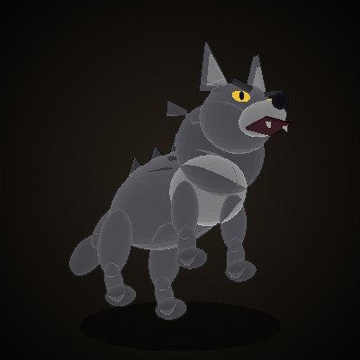 | Field Wolf | 4 | 71 | normal | Wildflower Plains | 4 |
 | Redeye Wolf | 4 | 71 | normal | Sandwind Fields | 5 |
 | Black Wolf | 4 | 98 | normal | Snowflake Hill | 5 |
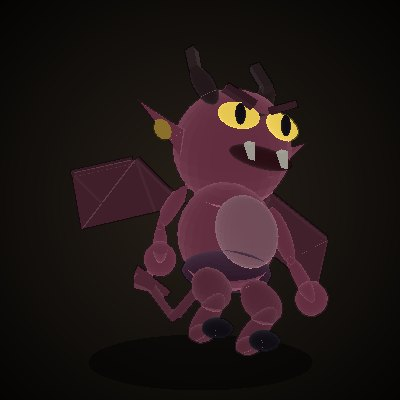 | Old Imp | 7 | 114 | normal | Thornbrush Gorge | 5 |
 | Tusker Orc Grunt | 7 | 114 | normal | Firefly Lakeside | 6 |
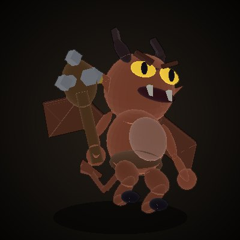 | Spiketail Imp Hunter | 7 | 114 | normal | Hyena Canyon | 6 |
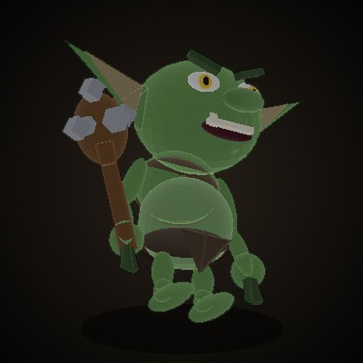 | Goblin Lookout | 8 | 51 | normal | Thornbrush Gorge | 3 |
 | Green Dryad | 8 | 131 | normal | Firefly Lakeside | 6 |
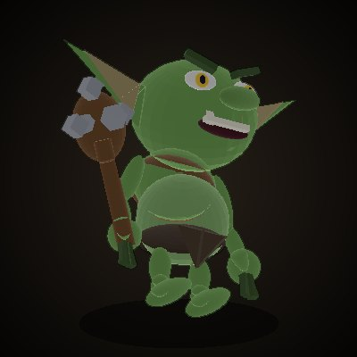 | Goblin Scout | 8 | 131 | normal | Shepherd's Hill | 6 |
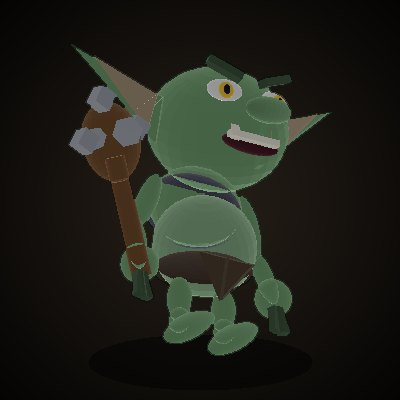 | Goblin Bandit | 8 | 131 | normal | Ice Cave Entrance | 3 |
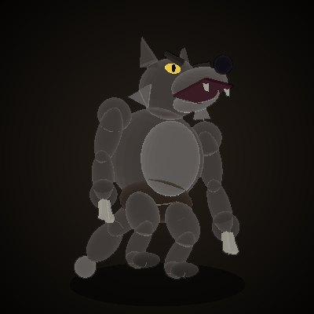 | Werewolf | 9 | 59 | normal | Shepherd's Hill | 6 |
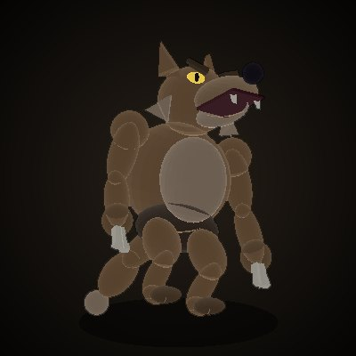 | Moonhowl Werewolf | 9 | 59 | normal | Hyena Canyon | 5 |
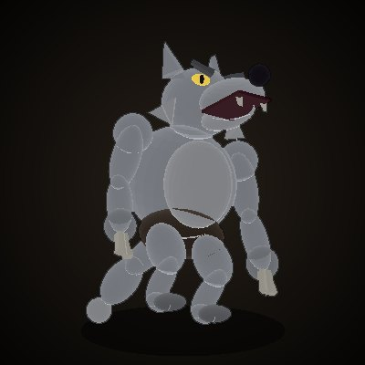 | Ashfur Werewolf | 9 | 59 | normal | Ice Cave Entrance | 9 |
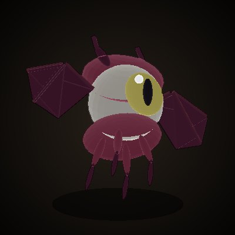 | Demon Eye | 10 | 172 | normal | Raider's Pass | 9 |
 | Goblin Bandit Underboss | 10 | 172 | normal | Frost Giant Valley | 11 |
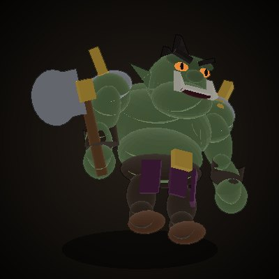 | Redfeather Orc Lieutenant | 11 | 76 | normal | Marsh of the Dead | 8 |
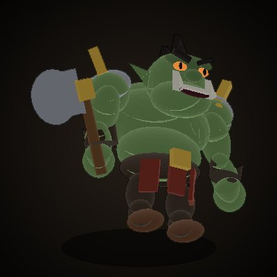 | Orc Lieutenant | 11 | 76 | normal | Bandit Trail | 9 |
 | Blood Mushroom | 12 | 82 | normal | Marsh of the Dead | 10 |
 | Tusker Orc Warchief | 12 | 82 | normal | Forest of Withered Spirits | 10 |
| Grizzly Bear | 12 | 82 | normal | Raider's Pass | 6 |
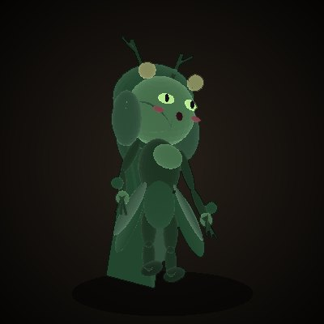 | Dryad | 13 | 88 | normal | Forest of Withered Spirits | 8 |
 | Stone Golem | 13 | 88 | normal | Bandit Trail | 5 |
 | Goblin Lord | 13 | 88 | normal | Frost Giant Valley | 9 |
 | Rockcrusher Bug | 14 | 95 | named | Bandit Trail | 10 |
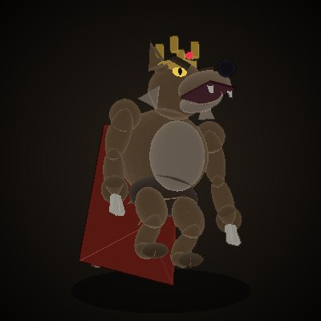 | Moonhowl Werewolf Chief | 14 | 95 | named | Raider's Pass | 8 |
 | Goblin Bandit Boss | 14 | 95 | named | Frost Giant Valley | 9 |
 | Little Dark Terror | 15 | 101 | named | Marsh of the Dead | 10 |
 | Crimson Spider | 15 | 101 | named | Forest of Withered Spirits | 12 |
 | Rubble Zombie | 15 | 101 | normal | Abandoned Village | 10 |
 | Rubble Zombie Leader | 16 | 108 | normal | Abandoned Village | 10 |
 | Rubble Imp | 17 | 116 | normal | Abandoned Village | 8 |
 | Raggedwing Bat | 18 | 124 | normal | Ashen Woods | 6 |
| Zombie Soldier | 19 | 132 | normal | Ashen Woods | 9 |
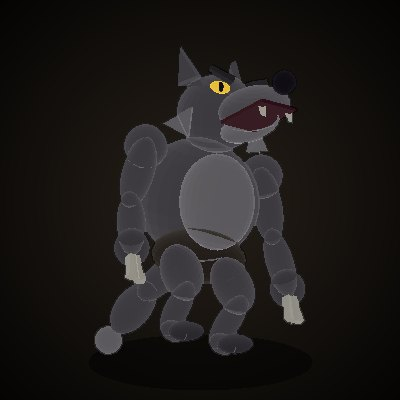 | Werewolf | 20 | 140 | normal | Ashen Woods | 1 |
 | Guard Stone | 20 | 342 | normal | Golden Sail Territory Castle | 0 |
 | Guard Stone | 20 | 342 | normal | Solbaram Territory Castle | 0 |
 | Hobgoblin | 21 | 150 | normal | Maple Ruins | 14 |
| Ruin Skeleton Warrior | 21 | 150 | normal | Maple Ruins | 10 |
 | Old Rubble Imp | 21 | 150 | normal | Ruins of Lament | 10 |
 | Angry Skeleton Soldier | 22 | 159 | normal | Ruins of Lament | 12 |
 | Rubble Zombie Warrior | 22 | 159 | normal | Ruins of Lament | 12 |
 | Brown Bugbear | 23 | 169 | normal | Ruins of Lament | 9 |
 | Wandering Deserter Captain | 23 | 168 | named | Ruins of Lament | 7 |
 | Ashen Bugbear | 23 | 168 | normal | Ruins of Lament | 9 |
 | Bugbear Warchief | 24 | 179 | named | Maple Ruins | 12 |
 | Brown Bugbear Warrior | 24 | 179 | normal | Ruins of Lament | 12 |
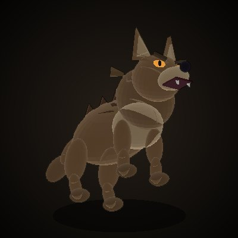 | Hornhelm War Hound | 24 | 179 | normal | Hornhelm Fortress | 6 |
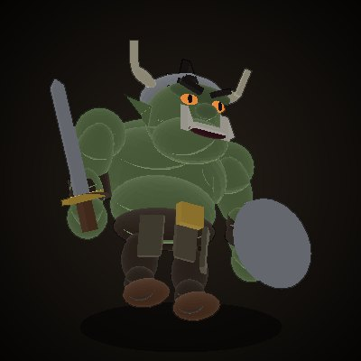 | Hornhelm Orc Sentry | 25 | 189 | normal | Hornhelm Fortress | 9 |
| Execution Ground Ghost | 26 | 200 | normal | Crow's Execution Ground | 5 |
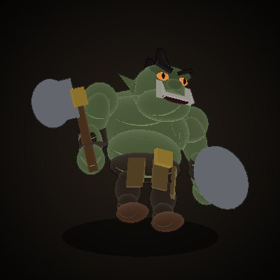 | Hornhelm Orc Infantry | 26 | 200 | normal | Hornhelm Fortress | 9 |
| Wailing Spirit | 27 | 211 | normal | Crow's Execution Ground | 6 |
 | Mist Terror Hunter | 27 | 212 | normal | Poisonmist Swamp | 7 |
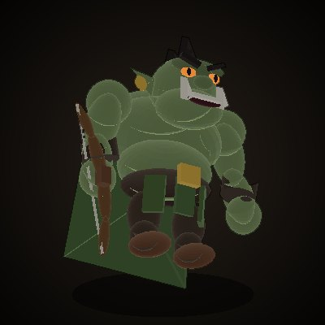 | Hornhelm Orc Archer | 27 | 212 | normal | Hornhelm Fortress | 7 |
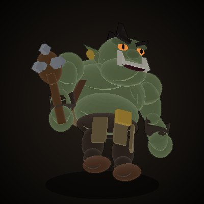 | Hornhelm Orc Supplier | 27 | 212 | normal | Hornhelm Fortress | 8 |
| Grave Grub | 28 | 223 | normal | Crow's Execution Ground | 4 |
 | Huge Redshell Ant | 28 | 223 | normal | Poisonmist Swamp | 8 |
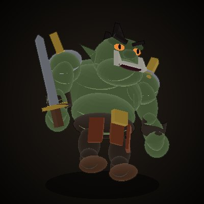 | Hornhelm Orc Scout | 28 | 223 | normal | Hornhelm Fortress | 9 |
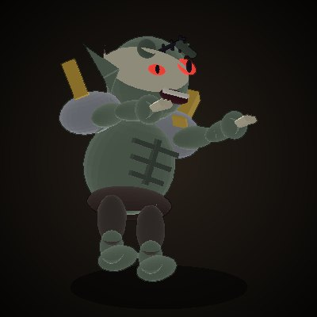 | Raging Ghoul | 29 | 235 | normal | Crow's Execution Ground | 12 |
 | Ant Larva | 29 | 746 | normal | Ruby Hive 1F | 7 |
 | Swamp Stinger | 29 | 235 | normal | Poisonmist Swamp | 14 |
 | Hornhelm Orc Shaman | 29 | 235 | normal | Hornhelm Fortress | 19 |
 | Worker Ant | 30 | 439 | normal | Ruby Hive 1F | 8 |
 | Swamp Ogre | 30 | 254,654 | raid | Poisonmist Swamp | 10 |
| Hornhelm Orc Captain | 30 | 248 | namedaggro | Hornhelm Fortress | 12 |
 | Weird Swamp Wasp | 30 | 248 | normalaggro | Poisonmist Swamp | 9 |
 | Redtusk Orc | 31 | 261 | normal | Redtusk Fortress | 10 |
 | Meadow Bugbear | 31 | 261 | normal | Petrified Flower Field | 15 |
 | Ant Captain | 31 | 462 | normalaggro | Ruby Hive 1F | 5 |
 | Swamp Stinger Worker | 31 | 261 | normal | Poisonmist Swamp | 4 |
 | Wandering Wraith | 31 | 261 | normal | Crow's Execution Ground | 6 |
 | Redtusk Orc Archer | 32 | 275 | normal | Redtusk Fortress | 9 |
 | Harpy | 32 | 274 | normalaggro | Petrified Flower Field | 7 |
 | Overseer Ant | 32 | 274 | normal | Ruby Hive 1F | 7 |
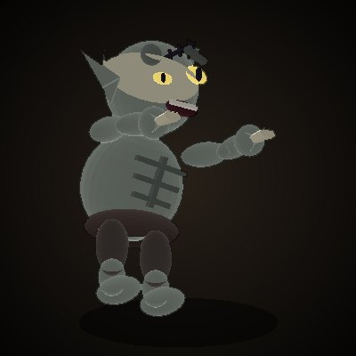 | Ghoul | 32 | 275 | normal | Crow's Execution Ground | 4 |
 | Toad Lord | 32 | 275 | normal | Poisonmist Swamp | 7 |
 | Redtusk Orc Warrior | 33 | 288 | normalaggro | Redtusk Fortress | 8 |
| Meadow Bugbear Warrior | 33 | 288 | normalaggro | Petrified Flower Field | 5 |
 | Recruit Ant | 33 | 510 | normal | Ruby Hive 1F | 8 |
 | Swamp Stinger Soldier | 33 | 288 | normal | Poisonmist Swamp | 6 |
 | Redtusk Orc Shaman | 34 | 303 | normal | Redtusk Fortress | 7 |
 | Meadow Medusa | 34 | 302 | namedaggro | Petrified Flower Field | 8 |
 | Patrol Ant | 34 | 535 | normal | Ruby Hive 2F | 8 |
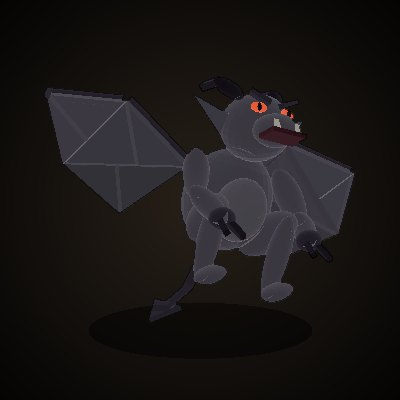 | Stonewing Escort | 34 | 30,391 | normal | Crow's Execution Ground | 0 |
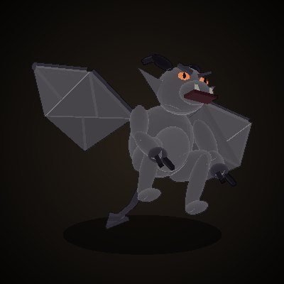 | Lord's Stonewing | 34 | 30,391 | normal | Crow's Execution Ground | 0 |
 | Swamp Spider | 34 | 303 | normalaggro | Poisonmist Swamp | 8 |
 | Red-Eye Archer | 34 | 30,391 | normal | Hornhelm Fortress | 0 |
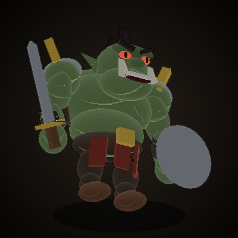 | Red-Eye Guard | 34 | 30,391 | normal | Hornhelm Fortress | 0 |
| Death Stalker | 34 | 303 | normal | Crow's Execution Ground | 7 |
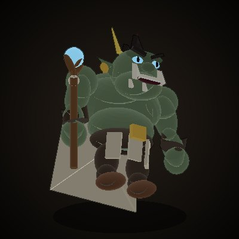 | Hornhelm Orc Elder | 34 | 605 | normalaggro | Hornhelm Fortress | 12 |
 | Redtusk Orc Captain | 35 | 317 | namedaggro | Redtusk Fortress | 12 |
 | Venomfang Wyvern | 35 | 317 | normalaggro | Petrified Flower Field | 15 |
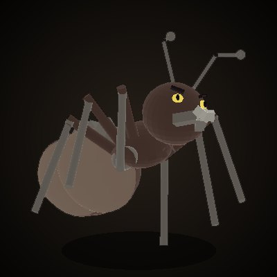 | Guard Ant | 35 | 561 | normal | Ruby Hive 2F | 8 |
| Soldier Ant | 35 | 317 | normalaggro | Ruby Hive 2F | 12 |
 | Stinger Drone | 35 | 317 | namedaggro | Poisonmist Swamp | 6 |
 | Stonewing Lord | 35 | 482,940 | raid | Crow's Execution Ground | 9 |
| Gallows Tree | 35 | 317 | named | Crow's Execution Ground | 12 |
 | Queen's Nurse Ant | 35 | 4,000 | normal | Ruby Throne Room | 0 |
 | Red-Eye Fort Captain | 35 | 482,940 | raid | Hornhelm Fortress | 14 |
 | Guardian Basilisk | 36 | 332 | normal | Pass of the Dead | 12 |
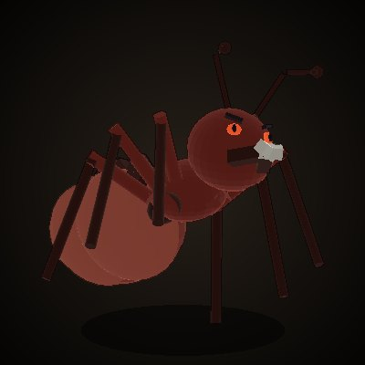 | Warrior Ant Captain | 36 | 498 | normalaggro | Ruby Hive 2F | 9 |
| Pass Scavenger | 37 | 348 | normal | Pass of the Dead | 11 |
 | Palace Ant | 37 | 695 | normal | Ruby Throne Room | 26 |
 | Queen's Guard Ant | 37 | 4,343 | normalaggro | Ruby Throne Room | 0 |
 | Grey Banner Spearman | 37 | 695 | normalaggro | Solbaram Territory Castle | 26 |
| Chained Soul | 38 | 363 | normal | Pass of the Dead | 7 |
 | Palace Ant Captain | 38 | 545 | normalaggro | Ruby Throne Room | 13 |
 | Grey Banner Captain Grave | 38 | 497,574 | raidaggro | Solbaram Territory Castle | 25 |
 | Castle Gate | 38 | | normal | Solbaram Territory Castle | 0 |
| Grey Banner Knight | 38 | 545 | normalaggro | Solbaram Territory Castle | 13 |
 | Chieftain's Henchman | 39 | 31,941 | normal | Pass of the Dead | 0 |
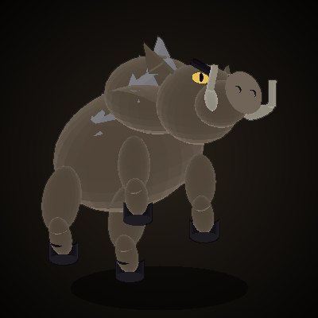 | Wind Boar | 39 | 380 | normal | Pass of the Dead | 9 |
 | Queen's Royal Guard Ant | 39 | 7,051 | normal | Ruby Throne Room | 0 |
 | Pass Giant | 40 | 397 | namedaggro | Pass of the Dead | 9 |
 | Pass Scavenger Chief | 40 | 281,297 | raid | Pass of the Dead | 10 |
 | Violet Mana Jelly | 40 | 397 | normal | Leaning Tower 1F | 14 |
 | Ruby Queen | 40 | 386,384 | raid | Ruby Throne Room | 98 |
 | Tower Red Goblin | 41 | 414 | normal | Leaning Tower 1F | 12 |
 | Tower Stonefist Giant | 42 | 432 | normalaggro | Leaning Tower 1F | 10 |
 | Tower Shade Bat | 42 | 432 | normalaggro | Leaning Tower 1F | 9 |
 | Hawk Chick | 42 | 432 | normal | Leaning Tower Summit | 9 |
| Hawk Scout | 42 | 449 | normal | Leaning Tower Summit | 9 |
 | Tower Violet Fiend | 43 | 449 | normal | Leaning Tower Summit | 18 |
 | Tower Ironhorn Guardian | 44 | 468 | normalaggro | Leaning Tower Summit | 23 |
| Tower Skeleton Mage | 44 | 468 | normalaggro | Leaning Tower Summit | 7 |
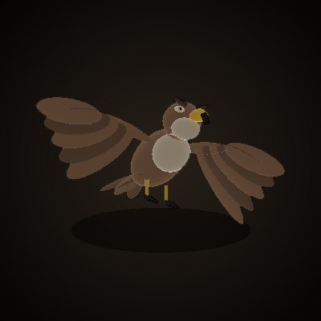 | Tower Hunting Hawk | 44 | 1,601 | normalaggro | Leaning Tower Summit | 22 |
 | Shackled Wraith | 45 | 486 | normalaggro | Dragon's Lair 1F | 12 |
 | Tower Warp Guide Stone | 45 | 486 | normal | Leaning Tower Summit | 14 |
 | Lair Servant | 46 | 505 | normal | Dragon's Lair 1F | 23 |
 | Guard Corps Archer | 46 | 34,245 | normal | Dragon's Lair 1F | 0 |
 | Guard Corps Soldier | 46 | 34,245 | normal | Dragon's Lair 1F | 0 |
 | Tower Scale Warrior | 46 | 505 | normal | Leaning Tower 3F | 13 |
 | Lair Servant Archer | 47 | 524 | normal | Dragon's Lair 1F | 11 |
 | Deathwatch Guard Captain | 47 | 301,589 | raid | Dragon's Lair 1F | 9 |
 | Tower Twin-horn Beast | 47 | 524 | normalaggro | Leaning Tower 3F | 19 |
 | Tower Bone Giant | 47 | 524 | normalaggro | Leaning Tower 3F | 13 |
 | Lair Servant Warrior | 48 | 544 | normal | Dragon's Lair 1F | 9 |
 | Lord's Shade Knight | 48 | 544 | normal | Leaning Tower 3F | 16 |
 | Tower Shadow Witch | 48 | 544 | normalaggro | Leaning Tower 3F | 20 |
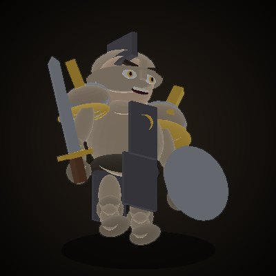 | Grey Banner Spearman | 48 | 544 | normalaggro | Golden Sail Territory Castle | 9 |
 | Mistress's Marksman | 49 | 35,283 | normal | Dragon's Lair 2F | 0 |
 | Mistress's Underling | 49 | 35,283 | normal | Dragon's Lair 2F | 0 |
 | Lair Servant Captain | 49 | 1,929 | normalaggro | Dragon's Lair 2F | 11 |
 | Dragon Porter Captain | 49 | 563 | normal | Dragon's Lair 2F | 10 |
 | Lord's Shade Soldier | 49 | 563 | normal | Leaning Tower 3F | 15 |
 | Tower Spirit Steed | 49 | 563 | normalaggro | Leaning Tower 3F | 11 |
 | Tower Moss Golem | 49 | 563 | normal | Leaning Tower 3F | 17 |
 | Grey Banner Captain Morgan | 49 | 307,651 | raidaggro | Golden Sail Territory Castle | 20 |
 | Castle Gate | 49 | | normal | Golden Sail Territory Castle | 0 |
 | Cursed Mistress of the Lair | 50 | 310,727 | raid | Dragon's Lair 2F | 41 |
 | Headless Knight | 50 | 583 | normalaggro | Dragon's Lair 2F | 16 |
 | Death Knight | 50 | 583 | normalaggro | Leaning Tower 3F | 25 |
 | Lord of Darkness | 50 | 1,498 | normalaggro | Leaning Tower 3F | 29 |
 | Royal Lair Servant | 51 | 604 | normal | Dragon's Lair 2F | 10 |
 | Grey Banner Knight | 51 | 604 | normalaggro | Golden Sail Territory Castle | 10 |
 | Stonewing Gargoyle | 52 | 624 | normal | Wyvern Canyon | 11 |
 | Sandwind Gargoyle | 53 | 645 | normal | Wyvern Canyon | 18 |
 | Soul-Drinking Shadow | 54 | 37,821 | normal | Wyvern Canyon | 0 |
 | Seer's Handmaiden | 54 | 37,821 | normal | Wyvern Canyon | 0 |
 | Thunder Wyvern | 54 | 666 | normalaggro | Wyvern Canyon | 15 |
 | Prophet of Darkness | 55 | 420,467 | raid | Wyvern Canyon | 14 |
 | Canyon Succubus | 55 | 687 | normal | Wyvern Canyon | 8 |
 | Canyon Succubus Matron | 56 | 885 | named | Wyvern Canyon | 11 |